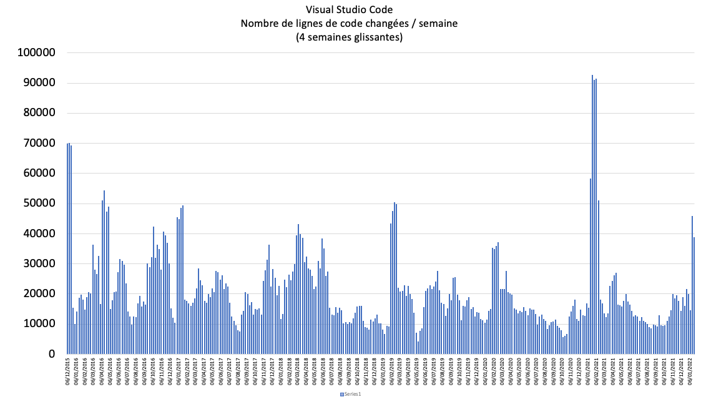
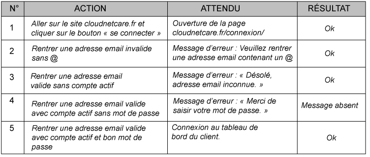
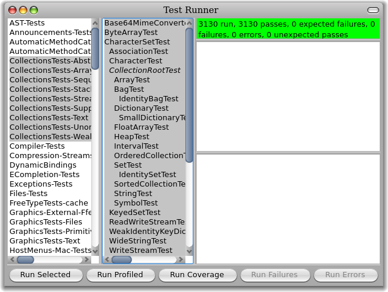
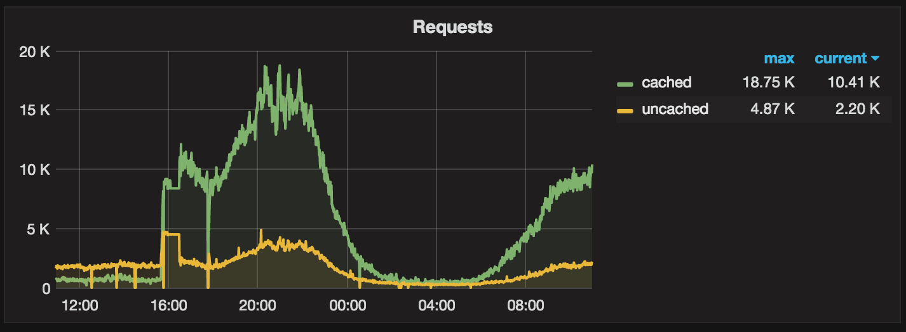

<!DOCTYPE html>
<html>
	<head>
    <meta charset="utf-8" />
		<meta name="viewport" content="width=device-width, initial-scale=1.0">

    <title>Méthodes et outils de test</title>

		<link rel="stylesheet" href="dist/reset.css">
		<link rel="stylesheet" href="dist/reveal.css">
		<link rel="stylesheet" href="dist/theme/white.css" id="theme">

		<!-- Theme used for syntax highlighting of code -->
		<link rel="stylesheet" href="plugin/highlight/monokai.css">

    <style>
      h1,h2,h3 {
        text-transform: none !important;
      }
    </style>
  </head>
  <body>
    <div class="reveal">
      <div class="slides">
        <section data-markdown>
          <script type="text/template">
            ## Daniel Garnier-Moiroux

            

            Software Engineer @ VMware

            https://github.com/Kehrlann

            daniel@garnier.wf

            ---

            ## Du soft _partout_

            

            ---

            ## Plan

            1. Tour d'horizon théorique
            2. En pratique

            ---
            
            # Tour d'horizon théorique

            <br>
            <br>

            Pourquoi ? Comment ?

            ---

            ## Pourquoi ?

            ---

            ## ...

            

            ---

            ## ... parce que

            

            ---

            ## Le logiciel n'est pas un pont


            

            ---

            

            Taille totale: ~1.5M LoC

            ---

            ## Comment ?

            ---

            

            ---

            ```python []
            from examples import rpn


            resultat = rpn.compute("1 2 +")


            ```

            ---

            ```python [3,4]
            from examples import rpn

            print("test addition")
            attendu = 3

            resultat = rpn.compute("1 2 +")


            ```

            ---

            ```python [7]
            from examples import rpn

            print("test addition")
            attendu = 3

            resultat = rpn.compute("1 2 +")
            print(f"{attendu} == {resultat} ?")


            ```

            ---

            ```python [7-11]
            from examples import rpn

            print("test addition")
            attendu = 3

            resultat = rpn.compute("1 2 +")
            print(f"{attendu} == {resultat} ?")
            if attendu == resultat:
                print("~~~~~~~~> OK 🎉")
            else:
                print("~~~~~~~~> Oh non 😢")


            ```
            ---

            ```python [5,12-15|]
            from examples import rpn

            print("test addition")
            attendu = 3
            try:
                resultat = rpn.compute("1 2 +")
                print(f"{attendu} == {resultat} ?")
                if attendu == resultat:
                    print("~~~~~~~~> OK 🎉")
                else:
                    print("~~~~~~~~> Oh non 😢")
            except Exception as e:
                print("Erreur dans le test... 💥")
                print(e)
            ```

            ---

            

            ---

            - <!-- .element: class="fragment" -->
            Des **cas** de tests
            - <!-- .element: class="fragment" -->
            Des **fixtures** == préconditions à un test
            - <!-- .element: class="fragment" -->
            Des **actions**, "le code à tester"
            - <!-- .element: class="fragment" -->
            Des **assertions**
            - <!-- .element: class="fragment" -->
            Exécutés avec un **test runner**
            - <!-- .element: class="fragment" -->
            Produisent des **résultats**, dans un format donné (souvent textuel)

            ---

            - Des **cas** de tests
              - <!-- .element: class="fragment" -->
              _Le bouton payer amène sur la page Paiement_
            - Des **fixtures** == préconditions à un test
              - <!-- .element: class="fragment" -->
              _Ajouter 3 items au panier_
            - Des **actions**, "le code à tester"
              - <!-- .element: class="fragment" -->
              _Cliquer sur Payer_ 
            - Des **assertions**
              - <!-- .element: class="fragment" -->
              _L'utilisateur est sur la page panier_
              - <!-- .element: class="fragment" -->
              _Le prix affiché est 24,50€_

            ---

            ```python [|1,2|3-6|7-9|10-12]
            # Cas de test
            def test_retour_arriere_impossible():
              # Arrange (fixtures)
              snake = Snake([(3,10), (3, 11), (3,12)])
              snake.set_direction("DOWN")

              # Act
              has_changed_direction = snake.set_direction("UP")

              # Assert
              assert has_changed_direction == False
              assert snake.direction == "DOWN"
            ```


            ---

            ## Les frameworks

            - Pytest: https://docs.pytest.org/
            - Catch2: https://github.com/catchorg/Catch2

            ---

            ## En pratique
            
            
            
            ---

            ## Repository du cours

            https://github.com/Kehrlann/python-test-examples

            <br>
            <br>

            ## Repository du TP

            https://github.com/Kehrlann/python-tests
          
            ---

            

            ---

            

            ---

            ## "Test desiderata"

            _Kent Beck, 2019_

            <table>
              <tbody>
                <tr>
                  <td>Isolated</td>
                  <td>Behavioral</td>
                </tr>
                <tr>
                  <td>Composable</td>
                  <td>Structure-insensitive</td>
                </tr>
                <tr>
                  <td>Fast</td>
                  <td>Automated</td>
                </tr>
                <tr>
                  <td>Inspiring</td>
                  <td>Specific</td>
                </tr>
                <tr>
                  <td>Writable</td>
                  <td>Deterministic</td>
                </tr>
                <tr>
                  <td>Readable</td>
                  <td>Predictive</td>
                </tr>
              </tbody>
            </table>

            ---

            ## Combinaisons possibles:

            - **Unit tests:** Inspiring, writable, specific, fast ... not predictive ?
            - **Acceptance tests:** Readable (for non programmers), not fast or specific.
            - **Pour vous:**
              - Automated
              - Isolated, Composable, Deterministic
              - Specific

            ---

            ## TDD

            

            ---

            ## Mocking

            - pytest-mock
              - https://github.com/pytest-dev/pytest-mock 
            - FakeIt
              - https://github.com/eranpeer/FakeIt

            ---

            ## Repository du cours

            https://github.com/Kehrlann/python-test-examples

            <br>
            <br>

            ## Repository du TP

            https://github.com/Kehrlann/python-tests
          </script>
        </section>
      </div>
    </div>

    <script src="plugin/markdown/markdown.js"></script>
    <script src="plugin/highlight/highlight.js"></script>
    <script src="dist/reveal.js"></script>

    <script>
      Reveal.initialize({
              plugins: [RevealMarkdown, RevealHighlight],
              history: true,
              transition: "none",
              backgroundTransition: "none"
            });

			const loadScript = src => {
				return new Promise((resolve, reject) => {
						const script = document.createElement('script');
						script.type = 'text/javascript';
						script.onload = resolve;
						script.onerror = reject;
						script.src = src;
						document.head.append(script);
				})
			}
    </script>
  </body>
</html>
